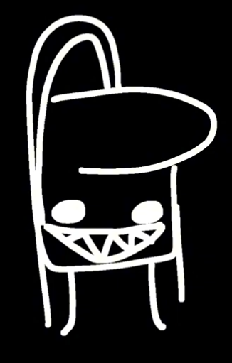

[PAGE REMOVED BY FRED] 
Fred already killed the requested page, too late. Bad luck to you. Click/tap the back button (or press the button below) and think what you've done...
BLUESKY | GAMEBANANA
© The br Crew 2024-2025